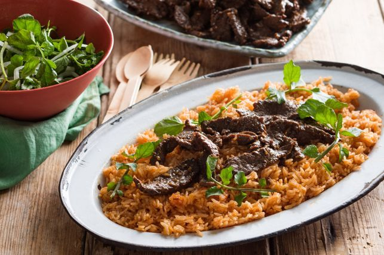

Oatmeal Cookie

Description
I order this every time at Joy Yee's its the best
Ingredients
600g beef rump steak, fat trimmed and finely sliced across the grain
2 tbsp finely chopped fresh lemongrass
2 small red chillies, finely sliced into rounds
1 small onion, peeled, halved and sliced crossways
Salt and ground white pepper
4 cups jasmine rice, cooked, cold
Steps to Make tomato beefcubes over fried rice
Marinate the beef strips in the garlic, lemongrass, chilli, fish sauce and oyster sauce. Cover and refrigerate for 2 hours or overnight.
Season the onion slices with salt and pepper and squeeze to extract a little of the onion juice. Place the onion in a small ceramic bowl and toss with the vinegar. Cover and refrigerate.
To make the tomato red rice heat the oil in a wok over a high heat. Cook the garlic for 30 seconds or until just beginning to colour. Add the rice and toss for 1 minute. Add the tomato paste and fish sauce and toss over the heat for 4 minutes or until the rice is warmed through. Season with white pepper to taste.
Continue cooking the shaking beef by heating a little of the rice bran oil in a wok over a high heat. Stir fry the beef in batches for 2 minutes tossing continuously and transfer to a plate.
To serve plate the tomato red rice. Pile the Vietnamese shaking beef as a high pile on top of the rice. Mix the watercress, onion slices and vinegar together and serve a small ball of the watercress garnish on top of each serve of beef. Serve immediately.